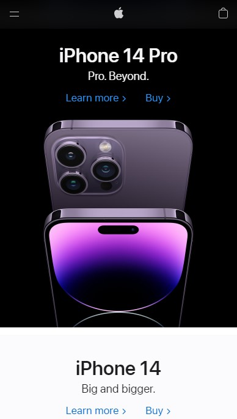
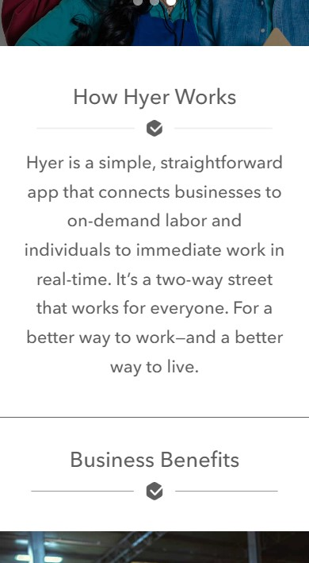
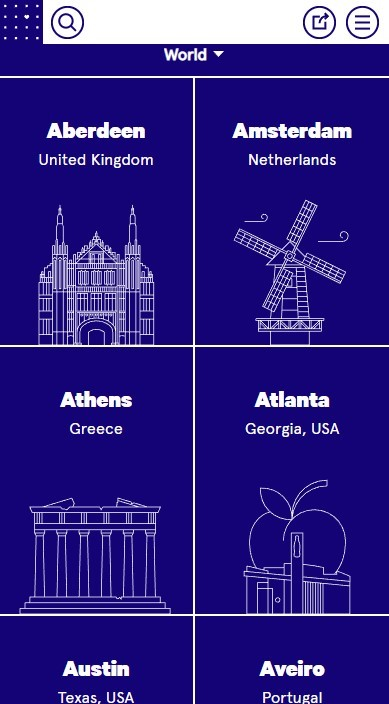

Alignment
Apple
Apple uses a center alignment all throughout their homepage. This helps the viewer read the information on the page quickly and entices them to continue scrolling down.
Repetition
Hyer
Hyer uses repetition in their homepage by using the same style of underline and icon under all their headings. This helps keep all of the elements of the page cohesive.
Contrast
On the Grid
On the Grid uses white against a dark blue background to provide high contrast. This contrast helps the images stand out and be seen clearly even though they use thin lines.